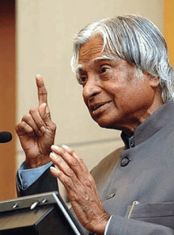

11th President of India
In office
25 July 2002 - 25 July 2007
Dr. A. P. J. Abdul Kalam
1931-2015
Missile Man Of India
Avul Pakir Jainulabdeen Abdul Kalam . 15 October 1931 - 27 July 2015) was an Indian aerospace scientist and statesman who served as the 11th President of India from 2002 to 2007. He was born and raised in Rameswaram, Tamil Nadu and studied physics and aerospace engineering. He spent the next four decades as a scientist and science administrator, mainly at the Defence Research and Development Organisation (DRDO) and Indian Space Research Organisation (ISRO) and was intimately involved in India's civilian space programme and military missile development efforts. He thus came to be known as the Missile Man of India for his work on the development of ballistic missile and launch vehicle technology. He also played a pivotal organisational, technical, and political role in India's Pokhran-II nuclear tests in 1998, the first since the original nuclear test by India in 1974. Kalam was elected as the 11th president of India in 2002 with the support of both the ruling Bharatiya Janata Party and the then-opposition Indian National Congress. Widely referred to as the "People's President", he returned to his civilian life of education, writing and public service after a single term. He was a recipient of several prestigious awards, including the Bharat Ratna, India's highest civilian honour. While delivering a lectureawards at the Indian Institute of Management Shillong, Kalam collapsed and died from an apparent cardiac arrest on 27 July 2015, aged 83. Thousands, including national-level dignitaries, attended the funeral ceremony held in his hometown of Rameswaram, where he was buried with full state honours.
His Early Life
Kalam was born in a low-income family on 15 October 1931 in the Hindu pilgrim centre Pambam Island Rameshwaram, India. His father, Jainulabdeen Marakayar, was the holder of a ferryboat that travelled the way between Rameshwaram and Dhanushkodi (now an abundant village) and worked as Imam at the local mosque. In contrast, his mom, Ashiamma, was a housewife. They all belonged to a Tamil Muslim family, and Kalam was the youngest among four brothers and one sister. Kalam's family belonged to a very rich merchant community, "Marakayar Traders", and had rich ancestors. Yet, his family loosed their luck by 1920; their trade between two countries, India and Srilanka, was unsuccessful and made them this poor that they had nothing except for their ancestor's home when Kalam was born. At a small age, he had to vend newspapers so that he could help his family in earning. Kalam started going to school in Schwartz Higher Secondary School, Ramanathapuram. He was an average student in school but loved studying math and other subjects and had a strong wish to learn.
His College Life
Avul Pakir Jainulabdeen Abdul Kalam took admission to Saint Joseph's College, Tiruchirappalli, which was affiliated with Madras University, and graduated in Physics. Later he moved to Madras and took admission to the Madras University of Technology in Aerospace Engineering in 1955. While he was working on the project at the university, his Dean went angry with him and gave him only a 3-day deadline to complete the work that he had done, which made him happy.
Kalam as a Scientist
After completing his degree at the Madras University of Technology in 1960, he joined DRDO in
Aeronautics Development Establishment as a scientist. He designed a small aircraft as the first
scientific work of his career. Still, as he wasn't satisfied with his job, he also started working in
other places like the INCOSPAR committee working under Vikram Sarabhai, well known Indian Scientist.
In 1963 Kalam Joined the Indian Space Research Organization as the Project Director of India's First
Satellite Launch Vehicle (SLV-III), which effectively launched the Rohini Satellite to near-earth orbit
in 1980.
In 1965 he started working independently on a rocket project in Defense Research and Development
Organization, and after 4 years, he got approval from the government and added more engineers to it.
From 1963 to 1964, he went to NASA's Langley Research Centre in Hampton, Virginia. Also, he visited
Goddard Space flight centre in Greenbelt, Maryland, and the wallops flight facility.
In the year 1970, he got an invitation from Raja Ramanna to be the observer of India's First Nuclear
Test named Smiling Buddha as the representative of Terminal Ballistics Research Laboratory even when he
wasn't part of its development. In the same year, he directed two projects, Project Devil and Project
Valiant, in which he wanted to build up Missiles with the help of SLV program technology. While
developing them, Kalam Faced an issue when Union Cabinet disapproved it. Still, later, Prime Minister
Indira Gandhi provided him with a secret fund for this project which was under Kalam's directorship.
Kalam convinced the Union Cabinet that they would hide the true nature of these secret aerospace
projects.
In the years between 1970 - and 1990, Kalam worked to build-up the Polar Satellite Launch Vehicle (PSLV)
and SLV-III projects. They both were successful and powerful projects. In 1980, he was powerful enough
that the Government was ready to initiate an advanced missiles project under his directorship. Later
under the direction of Defense minister R.Venkataraman, he started working on Integrated Guided Missile
Development Programme (IGMDP) with a budget of 3.88 billion as a Chief Executive. Later he took part in
the development of many missiles, including "Agni" and "Prithvi", but a few disliked the project due to
the misconduct, price, and taking further time. In July 1992, Kalam became the Head Scientific Advisor
of the Prime Minister and as well the Secretary of DRDO (Defense Research and Development Organization).
He was Chief Project Coordinator for the Pokhran-II nuclear test, and he got the title of "Best nuclear
scientist" by the media. Kalam was criticised by the director of the site K Santhanam that the
thermonuclear had been a fizzle, and he issued an incorrect report.
Life as President and Post Presidency
DR. A. P. J. ABDUL KALAM In 2002, Kalam was chosen as the 11th President of India. He was chosen as a candidate for Presidency; he and NDA both were popular and in power at that time; all other candidates backed him, so it was a clear win for him. On 25 July, Kalam moved to Rashtrapati Bhavan after taking the oath. As a President, APJ Abdul Kalam made many tough decisions and was loved by people. He also won the label of "People's President". The toughest judgment of his life was when he signed an office of Profit Bill. He was criticised when he accepted the mercy plead of 20 people out of 21, but the one he rejected was guilty of rape. One petition he delayed was of Afzal Guru, who was accused of the December 2001 Parliament Attacks but later in 2014, he was hung. A different argument his decision caught was of striking President's Rule in Bihar in 2005 for a week.
List of Awards :-
- 1981: Padma Bhushan Government of India
- 1990: Padma Vibhushan Government of India
- 1997: Bharat Ratna Government of India
- 1997: Indira Gandhi Award for National Integration Government of India
- More Details about List of awards and honours.
Biographies :-
- Eternal Quest: Life and Times of Dr Kalam by S Chandra; Pentagon Publishers, 2002.
- President A P J Abdul Kalam by R K Pruthi; Anmol Publications, 2002.
- A P J Abdul Kalam: The Visionary of India by K Bhushan, G Katyal; A P H Pub Corp, 2002.
- A Little Dream (documentary film) by P. Dhanapal; Minveli Media Works Private Limited, 2008.
- The Kalam Effect: My Years with the President by P M Nair; Harper Collins, 2008.[215]
- A.P.J. Abdul Kalam: A Life by Arun Tiwari; Haper Collins, 2015.
- The People's President: Dr A P J Abdul Kalam by S M Khan; Bloomsbury Publishing, 2016.
- My Days With Mahatma Abdul Kalam by Fr A K George; Novel Corporation, 2009.